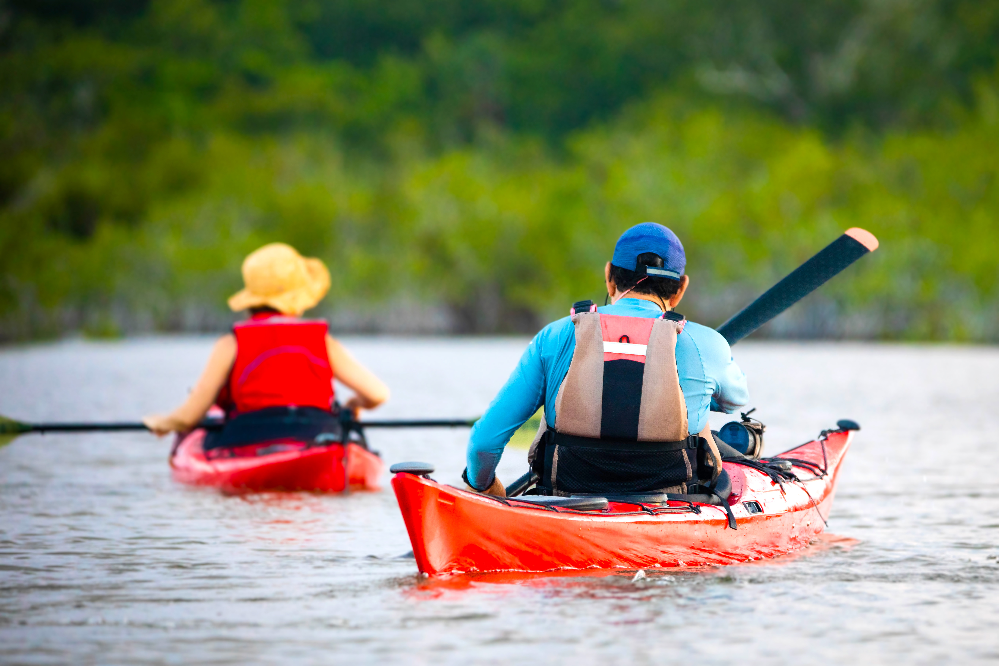

Program
体験プログラム紹介
1
みずしまエコツアー

水島の公害から学び
産業と環境の共生を考える
日本有数の鉄鋼・石油化学コンビナート地帯の水島での公害を学び、
市民と行政が手を取り合い、環境回復が進められた歴史を学びます。

コンビナート・海から学ぶ
水島エコクルーズ
水島港から出航し、水島灘を約1時間巡りながら、
解説付きで海洋ごみや環境問題について学べます。
講義後、参加者同士で気づき共有する時間もあります。
2
山乗渓谷
リバートレッキングツアー

奥深い自然とのふれあい
川沿いではブナ林や渓流、巨岩などの景観が楽しめ、
野鳥や植物との出会いも豊富。
イオンいっぱいの涼風森林浴も満喫できます。

冒険とフォトスポット
狭い岩場を横向きで進む“忍者のような”箇所を越えたり、
滝の前で写真を撮ったりと、
刺激と記念になる時間です。
3
旭川カヌーエコツアー

全く新しい視点で観光
カヌーに乗って旭川を進むと、岡山城や後楽園の風景を
水面から楽しめます。
街中ながら、緑が豊かなのも特徴的です。

撮影スポットもたくさん
橋脚が額縁のように浮かぶ絶景ポイントや、
桃型ボート・月見橋など
写真映えスポットも巡ります。